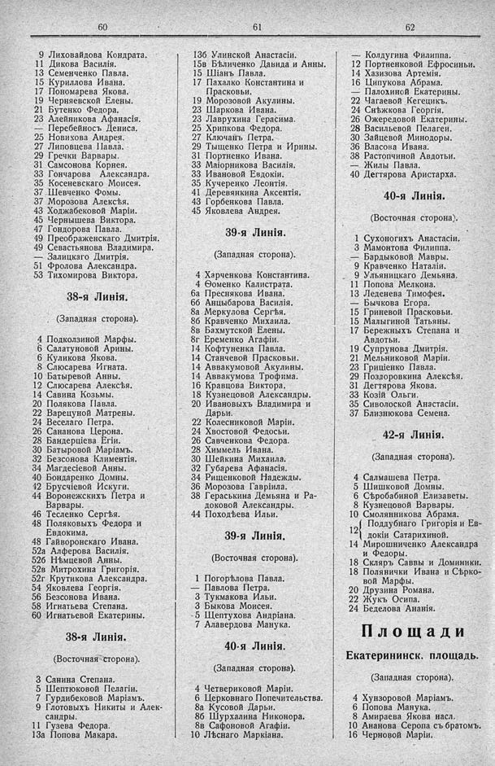

Лист источника 526
Скан

Распознанный текст
60
9 Лиховайдова Кондрата.
11 Дикова Василія.
13 Семенченко Павла.
15 Куриллова Ивана.
17 Пономарева Якова.
19 Черняевской Елены.
21 Бутенко Федора.
23 Алейникова Афанасія.
— Перебейносъ Дениса.
25 Новикова Андрея.
27 Липовцева Павла.
29 Гречки Варвары.
31 Самсонова Корнея.
33 Гончарова Александра.
35 Косеневского Моисея.
37 Шевченко Фомы.
37 Морозова Алексѣя.
43 Ходжабековой Маріи.
45 Чернышева Виктора.
47 Гондорова Павла.
49 Преображенскаго Дмитрія.
49 Севастьянова Владимира.
— Залицкаго Дмитрія.
51 Фролова Александра.
53 Тихомирова Виктора.
38-я Линія.
(Западная сторона).
4 Подколзиной Марфы.
6 Салатуновой Арины.
6 Куликова Якова.
8 Слюсарева Игната.
10 Батыревой Анны.
12 Слюсарева Алексѣя.
14 Савина Козьмы.
20 Полякова Павла.
22 Варецуной Матрены.
24 Веселаго Петра.
26 Сананова Церона.
28 Бандерціева Егіи.
30 Батыровой Маріамъ.
32 Безсонова Климентія.
34 Магдесіевой Анны.
40 Бондаренко Домны.
42 Брусчіевой Искуги.
44 Воронежскихъ Петра и
Варвары.
46 Тесленко Сергѣя.
48 Поляковыхъ Федора и
Евдокима.
48 Гайворонскаго Ивана.
52а Алферова Василія.
52б Нѣмцевой Анны.
52в Митрохина Григорія.
52г Крутикова Александра.
54 Яковлева Георгія.
56 Безсонова Ивана.
58 Игнатьева Степана.
60 Игнатьевой Екатерины.
38-я Линія.
(Восточная сторона).
3 Санина Степана.
5 Шептюковой Пелагіи.
7 Гурдибековой Маріамъ.
9 Глотовыхъ Никиты и Алек-
сандры.
11 Гузева Федора.
13а Попова Макара.
61
13б Улинской Анастасіи.
15в Бѣличенко Давида и Анны.
15 Шіанъ Павла.
17 Пахалко Константина и
Прасковьи.
19 Морозовой Акулины.
23 Шаркова Ивана.
23 Лаврухина Герасима.
25 Хрипкова Федора.
27 Ключанъ Петра.
29 Тыщенко Петра и Ирины.
31 Портненко Ивана.
33 Маіорникова Василія.
33 Ивановой Евдокіи.
35 Кучеренко Леонтія.
41 Деревянкина Аксентія.
43 Горбенкова Павла.
45 Яковлева Андрея.
39-я Линія.
(Западная сторона).
4 Харченкова Константина.
4 Ѳоменко Калистрата.
6а Преснякова Ивана.
6б Анцыбарова Василія.
8а Меркулова Сергѣя.
8б Кравченко Михаила.
8в Бахмутской Елены.
8г Еременко Агафіи.
14 Кофтуненка Павла.
14 Станчевой Прасковьи.
14 Аввакумовой Акулины.
14 Аввакумова Трофима.
16 Кравцова Виктора.
18 Кузнецовой Александры.
20 Ивановыхъ Владимира и
Дарьи.
22 Колесниковой Маріи.
24 Хвостовой Федосьи.
26 Савченкова Федора.
28 Химмель Ивана.
30 Шейкина Михаила.
32 Губарева Афанасія.
34 Рищенковой Надежды.
36 Морозова Гавріила.
38 Гераськина Демьяна и Ра-
доковой Александры.
44 Походѣева Ильи.
39-я Линія.
(Восточная сторона).
1 Погорѣлова Павла.
— Павлова Петра.
3 Тукмакова Ильи.
3 Быкова Моисея.
5 Щептухова Андріана.
7 Алавердова Манука.
40-я Линія.
(Западная сторона).
4 Четвериковой Маріи.
6 Церковнаго Попечительства.
8а Кусовой Дарьи.
8б Шурхалина Никонора.
8в Сафоновой Агафіи.
10 Лѣснаго Маркіана.
62
— Колдугина Филиппа.
12 Портненковой Ефросиньи.
14 Хазизова Артемія.
16 Ципукова Абрама.
— Палохиной Екатерины.
22 Чагаевой Кегецикъ.
24 Снѣжкова Георгія.
26 Ожередовой Екатерины.
28 Васильевой Пелагеи.
30 Зайцевой Минодоры.
36 Власова Ивана.
38 Растопчиной Авдотьи.
— Жилы Павла.
40 Дегтярова Аристарха.
40-я Линія.
(Восточная сторона).
1 Сухоногихъ Анастасіи.
3 Мамонтова Филиппа.
— Бардыковой Мавры.
9 Кравченко Наталіи.
9 Ульяницкаго Демьяна.
11 Попова Мелкона.
13 Леденева Тимофея.
— Бычкова Егора.
15 Гриневой Прасковьи.
15 Малыгиной Татьяны.
17 Бережныхъ Степана и
Авдотьи.
19 Супрунова Дмитрія.
21 Мельниковой Маріи.
23 Гриціенко Павла.
29 Поздоровина Алексѣя.
31 Дегтярова Якова.
33 Козій Ольги.
35 Сиволоской Анастасіи.
37 Близнюкова Семена.
42-я Линія.
(Западная сторона).
4 Салмашева Петра.
5 Шишковой Домны.
6 Сѣробабиной Елизаветы.
8 Кузнецовой Варвары.
10 Смолянникова Абрама.
12 { Поддубнаго Григорія и Ев-
докіи Сатарихиной.
14 Мирошниченко Александра
и Федоры.
18 Скляръ Саввы и Доминики.
18 Полянички Ивана и Сѣрко-
вой Марфы.
20 Друзина Романа.
22 Жукъ Осипа.
24 Беделова Ананія.
Площади
Екатерининск. площадь.
(Западная сторона).
4 Хунзоровой Маріамъ.
6 Попова Манука.
8 Амираева Якова насл.
10 Ананова Серопа съ братомъ.
16 Черновой Маріи.